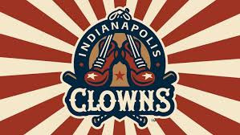
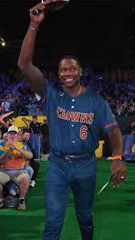

The Indianapolis Clowns Join Banana Ball
The Indianapolis Clowns are set to make their debut in the Banana Ball Championship League in 2026, joining the likes of the Savannah Bananas, Party Animals, Texas Tailgaters, Firefighters, and Loco Beach Coconuts. This marks a significant moment as the Clowns name, steeped in the rich history of the Negro Leagues, is revived to bring its unique blend of baseball skill and entertainment to a new generation of fans. The addition of the Clowns, alongside the Loco Beach Coconuts, brings the Banana Ball Championship League to six franchises, all competing for the league's inaugural title in 2026.
A Legacy of Entertainment and Skill
The original Indianapolis Clowns were pioneers in combining baseball and entertainment, often being described as the greatest barnstorming team for over 50 years. They were known for their colorful antics and sound baseball, even winning the Negro American League championship in 1952 with future Hall of Famer Hank Aaron playing for them. The Clowns' influence on the showmanship seen in Banana Ball today is undeniable, as they truly put entertainment first.
Beyond their entertainment value, the Clowns also broke barriers. In 1953, Toni Stone became the first woman to play professional baseball by joining the team, followed by Mamie "Peanut" Johnson and Connie Morgan in subsequent years.
The New Clowns Era
The revived Indianapolis Clowns will be coached by Errick Fox, who has been a part of the Savannah Bananas coaching staff since 2018. He will be joined by Primetime Coach Ryan Howard, a former World Series champion and National League MVP, who will coach the biggest games and honor Clowns legends like Satchel Paige, Josh Gibson, and Cool Papa Bell. Howard noted the synergy between the Clowns' legacy and Banana Ball's spirit, saying that the Negro Leagues brought "Flash. Innovation. Community and an unconditional love for the game" to baseball.
Key Debut Details:
- **Debut Game:** February 27, 2026, vs. Party Animals in Tallahassee, FL
- **First Game vs. Bananas:** March 27-28, 2026, at Angel Stadium, Anaheim, CA
- **Homecoming Games:** May 15-16, 2026, vs. Party Animals at Victory Field, Indianapolis
The Spirit of Banana Ball
The Clowns will participate in Banana Ball, a modified version of baseball designed for faster-paced, more fan-centric entertainment. Rules include a two-hour time limit, no walks, fans catching foul balls for outs, and batters being able to steal first base. The style aligns perfectly with the Clowns' historical approach of blending legitimate competition with comedic entertainment, paving the way for the Savannah Bananas to continue this tradition. Their debut is eagerly anticipated and represents an exciting new chapter for both the Indianapolis Clowns and the Banana Ball League.